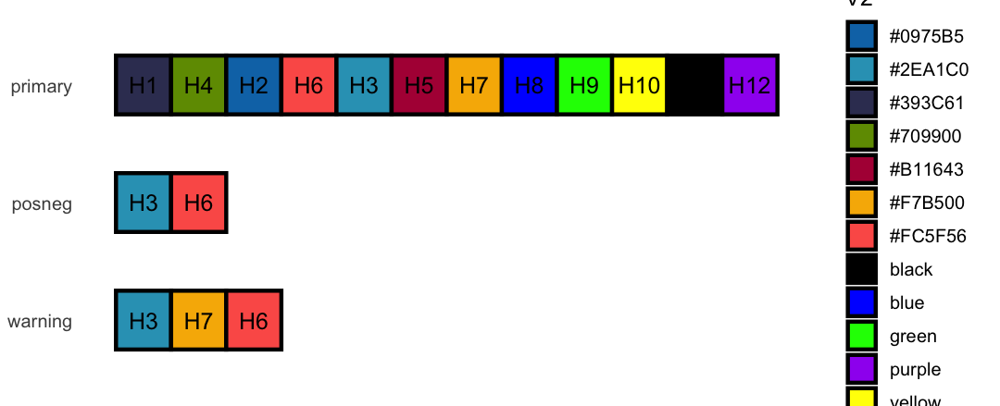

Highlights
01
ggplot2 Themes
A Core Surveillance ggplot2 theme with configurable grid lines, legend position, and axis orientation.
02
Color Palettes
Named color palette families (primary, warning, posneg). scale_color_cs() and scale_fill_cs() apply them in ggplot2.
03
Dual Formatting
Parallel number and date functions for Norwegian domestic reports and international journal publications.
Palettes

The csstyle color palettes